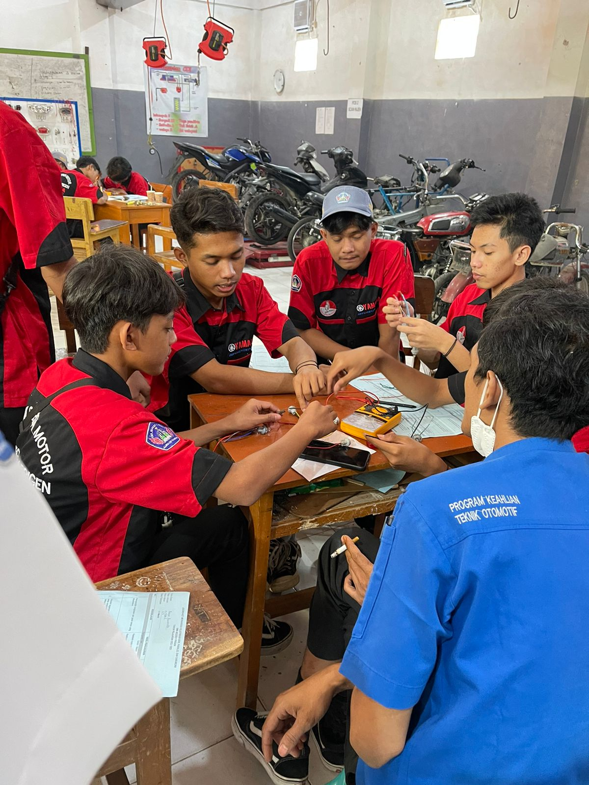
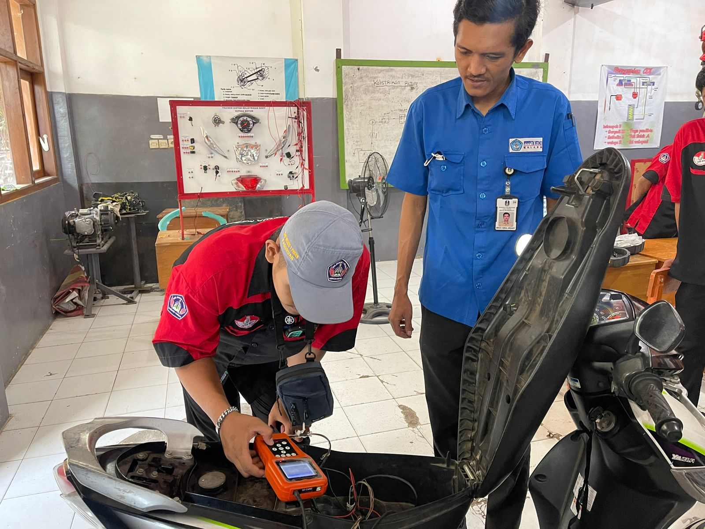

Teknik Sepeda Motor
Teknik Sepeda Motor adalah kompetensi keahlian pada Bidang Studi Keahlian Teknologi dan Rekayasa Program Studi Keahlian Teknik Otomotif yang menekankan pada keterampilan pelayanan jasa mekanik kendaraan sepeda motor roda dua. Kompetensi Keahlian Teknik Sepeda Motor menyiapkan peserta didik untuk bekerja pada bidang pekerjaan yang dikelola oleh badan, instansi atau perusahaan maupun pribadi (wirausaha).
Tujuan Teknik Sepeda Motor
Secara khusus tujuan Kompetensi Keahlian Teknik Sepeda Motor (TSM) adalah membekali pesertadidik dengan keterampilan, pengetahuan dan sikap agar kompeten dalam hal berikut: Perawatan dan perbaikan egine sepeda motor, Perawatan dan perbaikan sistem pemindah tenaga sepeda motor, Perawatan dan perbaikan chasis dan suspemsi sepeda motor, Perawatan dan perbaikan sistem kelistrikan sepeda motor.
Ruang Lingkup
Bidang pekerjaan yang dapat di isi oleh tamatan kompetensi keahlian Teknik Sepeda Motor antara lain: Teknik atau mekanik pada bengkel sepeda motor, Teknik perakitan atau teknisi produksi pada industri sepeda motor, Wirausahawan dalam bidang otomotif (Bengkel Sepeda Motor).
